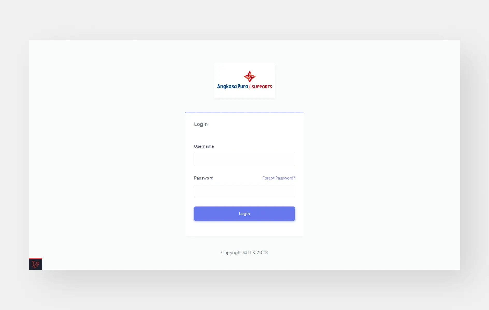

Website Pariwisata - Content Management System & Integrasi Proses Bisnis

Role
Fullstack Developer
Timeline
Agustus - November 2025
Technology
JavaScript, PHP, Laravel, Tailwind CSS, MySQL.
About Project
Projek ini berfokus pada perbaikan tampilan antarmuka pada website pariwisata Kota Balikpapan. Sistem yang dihasilkan juga mendukung proses bisnis manajemen data wisatawan pada Dinas Pariwisata, Pemuda, dan Olahraga Kota Balikpapan.
Problem
Website Cintabalikpapan merupakan platform yang menampilkan berbagai informasi pariwisata untuk memperkenalkan pariwisata di Kota Balikpapan. Website tersebut terdapat permasalahan oleh pengguna seperti tidak memiliki struktur konten pada halaman landingpage, penyusunan tata letak dan ukuran gambar yang tidak proporsional, informasi pariwisata ditampilkan kurang menarik, serta fitur lokasi yang tidak menampilkan maps.
Selain itu, terdapat permasalahan pada proses pelaporan data wisatawan oleh pengelola wisata yang membutuhkan waktu cukup lama dalam rekap laporan dan perhitungan jumlah wisatawan masih kurang efisien dikarenakan dilakukan secara manual.
Contribution
Saya mengumpulkan informasi terkait permasalahan pada website cintabalikpapan dengan evaluasi kegunaan yang melibatkan pengguna. Selain itu, menggali kebutuhan dari pihak stakeholder yang dapat diimplementasi pada sistem yang dibangun. Kemudian, melakukan perancangan tampilan antarmuka pengguna berdasarkan permasalahan yang ditemukan. Saya membuat perancangan sistem,dan implementasi kode program pada website pariwisata sesuai dengan kebutuhan pengguna.
Project Result
- Perbaikan tampilan antarmuka pengguna pada website pariwisata Kota Balikpapan sehingga meningkatkan pengalaman pengguna.
- Melakukan perancangan struktur database untuk diimplementasi sebagai kode program.
- Menghasilkan fitur baru untuk event dan berita pariwisata di Kota Balikpapan.
- Menghasilkan Sistem Manajemen Konten untuk kelola data pariwisata.
- Implementasi proses manajemen data wisatawan dengan generate laporan wisatawan dan laporan rekap jumlah kunjungan wisatawan.